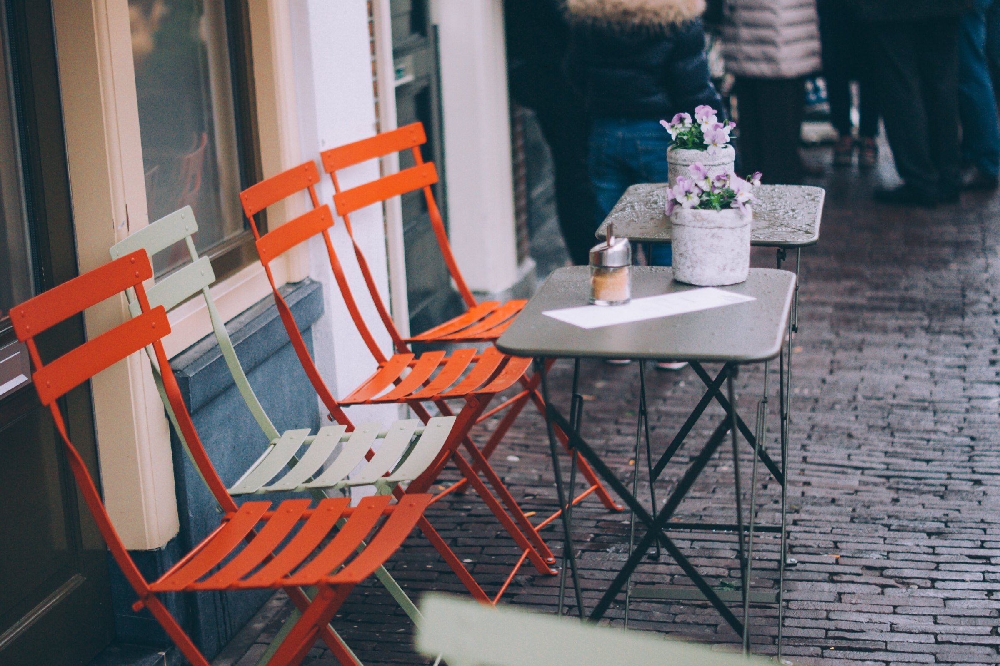
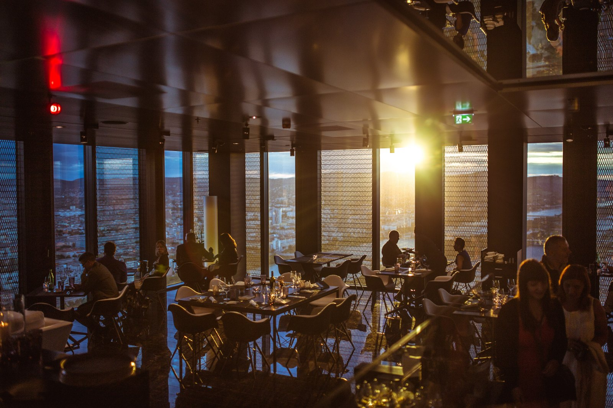
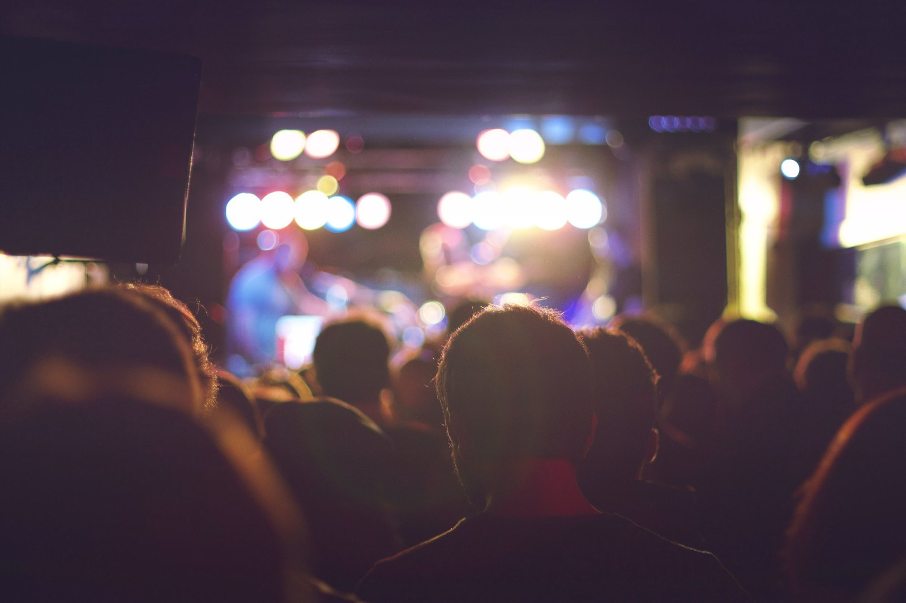
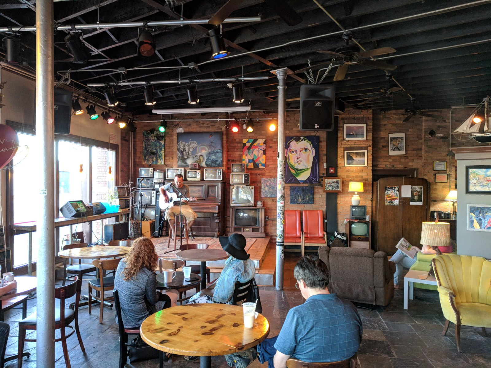
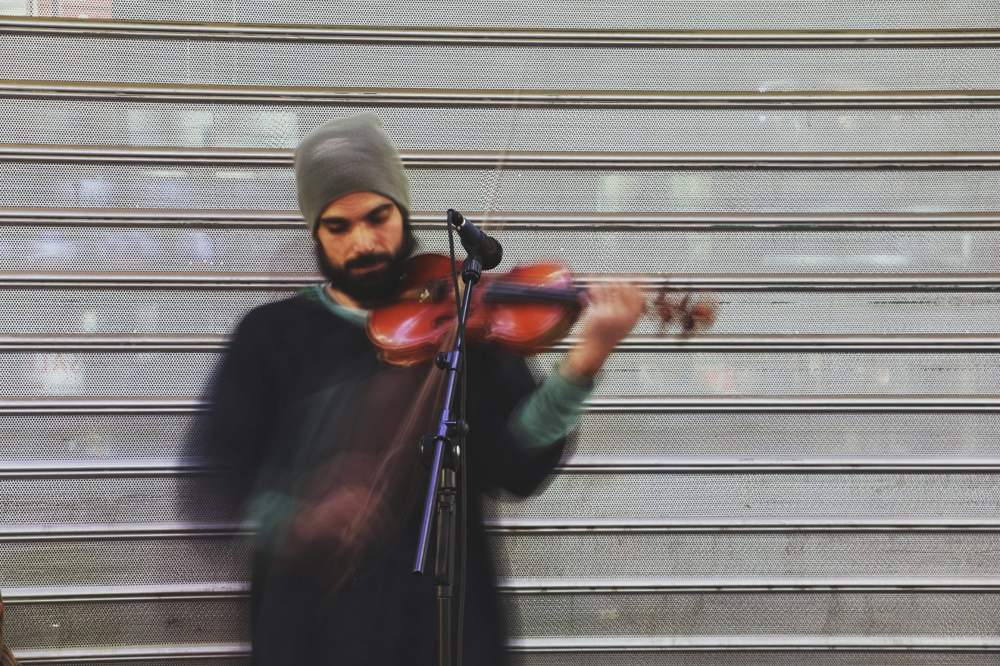

The grant we turned down
Marisol said no to the biggest cheque in her nonprofit's history. On strings, dignity, and the board meeting that followed.
Latte with Lata
Real Conversations. Built on Purpose.
Thoughtful conversations with people building careers, organizations, and movements around purpose.
Pull up a chair and discover the stories behind mission-driven work.


Lata Singh opened the doors in the spring of 2024 with a second-hand espresso machine, a borrowed oven and one rule: the music stays quiet enough to talk over.
The talking turned out to be the point. By autumn there were microphones on the corner table, and the people she had spent a career alongside, in clinics, councils and charities, started coming in to say what they could not say at a podium.
The machine has since been replaced. The rule has not.


Behind every organization, movement and meaningful career are difficult decisions, unexpected lessons, doubts and defining moments – we bring those stories to the table.
LATTE WITH LATA - NEW EPISODE EVERY THURSDAY
There's more behind every mission
Join Latte with Lata for candid, unhurried conversations with mission-driven leaders about the decisions and experiences that shaped their work. Recorded at the corner table on Thursday nights, every episode has the same four parts: the origin story, the hard trade-off, what no one tells you, and a coffee break to finish.
Marisol said no to the biggest cheque in her nonprofit's history. On strings, dignity, and the board meeting that followed.

Kwame runs a clinic where nobody is turned away. On the maths of a Tuesday morning, and the lesson no residency teaches.

Hannah rebuilt a benefits form that failed half the people who started it. On slow change inside government, and who decides it worked.

Elias hires people on the day they leave prison. On the phone call that started it, a first year of losses, and keeping the door open.

Rosa has knocked on more doors than she can count. On patience, small wins, and what a street knows that a strategy deck does not.

Grace kept a hospice team together through the hardest three years in nursing. On staying, and the coffee break that saved a shift.
Lata Singh is the host. By day she is a senior operating leader in one of the country's largest safety-net healthcare networks, responsible for operations, quality, workforce and finance at a scale where every decision has a waiting room attached.
She is also partway through doctoral study in leadership and innovation, which is why the questions here go one layer deeper than the highlight reel: what did it cost, who disagreed, and what would you do differently.
She opened a cafe with a microphone because the most honest things leaders ever told her were said over coffee, after the meeting, with nothing left to prove. Latte with Lata is that conversation, with the microphone switched on.




Coffee. Leadership. Purpose. Real conversation. Thursday nights from 6:30 pm the chairs turn to face the corner table, and there is one for you.

Pull up a chair
Coffee. Leadership. Purpose. Real conversation. Thursday nights from 6:30 pm the chairs turn to face the corner table, and there is one for you.
| Mon - Thu | 7:00 am - 6:00 pm |
|---|---|
| Fri | 7:00 am - 10:00 pm |
| Sat | 8:00 am - 10:00 pm |
| Sun | 8:00 am - 3:00 pm |
Thursdays we reopen at 6:30 pm for the recording. Free, first come first seated, and the guest stays for a coffee afterwards.
27 Bellwood StreetFor leaders, aspiring leaders, professionals, and anyone searching for more meaning in the work they do. A new conversation every Thursday, wherever you already listen.
The grant we turned down 44 min